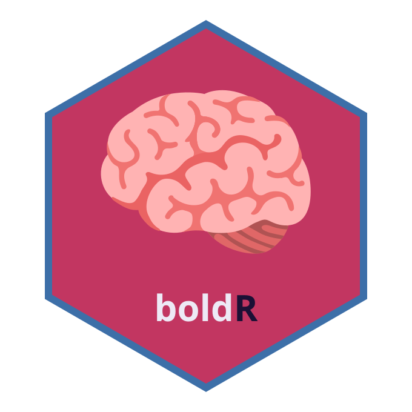

Package index
-
read_fmriprep() - Read fMRIPrep BIDS derivatives for a participant
-
prepare_bold() - Validate and prepare a fMRIPrep object for analysis
-
load_atlas() - Load a parcellation atlas
-
list_atlases() - List available built-in atlases
-
register_atlas() - Register a custom brain atlas
-
parcellate() - Extract ROI-level timeseries from a BOLD image
-
compute_tsnr() - Compute voxelwise temporal SNR
-
compute_fc() - Compute functional connectivity from parcellated BOLD timeseries
-
compute_roi_metrics() - Compute summary metrics per ROI
-
export_bold() - Export parcellated BOLD data for syncR
-
palette_bold - boldR colour palette
-
boldRboldR-package - boldR: fMRI BOLD Signal Analysis for Circadian and Sleep Research